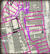

What did you see?
In 1290 a Welshman, William Cragh, was hanged in Swansea by
Lord William de Briouze. But then he seemed to come back to life...
Can you gather the evidence and decide what really happened?
Most people think that Cragh
Key to chart:
Play the game and cast your vote now!
Find out more about the Cragh story...

Explore maps of medieval Swansea
Discover medieval Swansea today